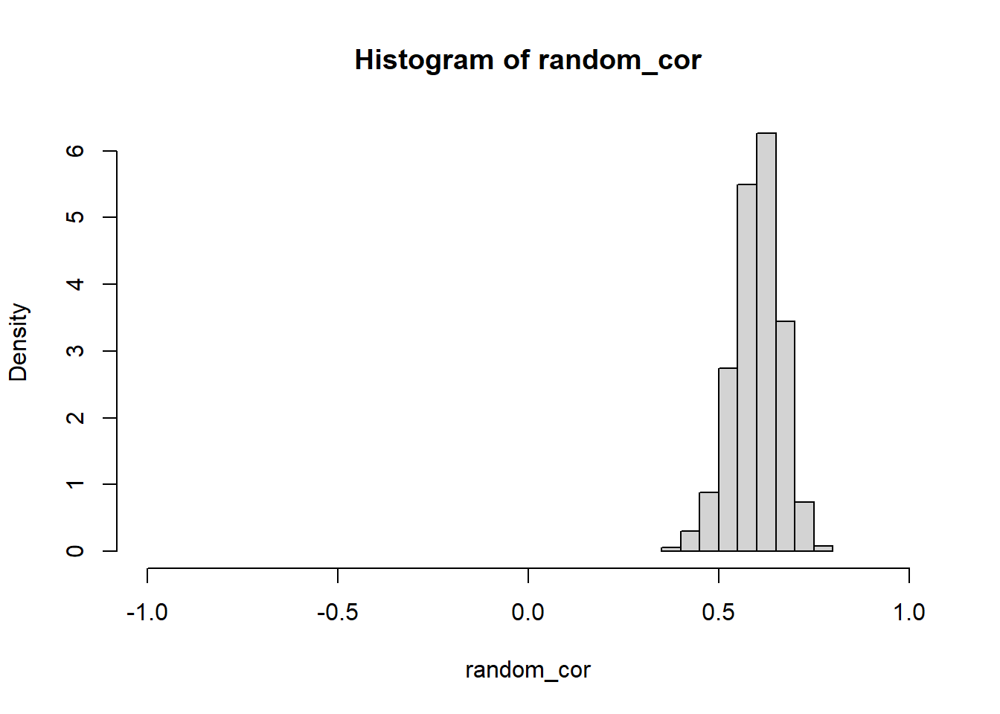

3.4.1 選抜による集団の等質性の変化の影響(p.69-72)
- シミュレーションで図3-8の知能指数の例(ゴルトンの研究)のデータを作成します。シミュレーションで作成するので，図3-8に完全に一致しません
sim_corというオブジェクトにデータを代入します。
set.seed(1234)
library(MASS)
sim_cor <- mvrnorm(200, mu = c(100, 100), Sigma = matrix(c(15*15, 15*15*0.6, 15*15*0.6, 15*15), ncol = 2))
sim_cor <- data.frame(father = round(sim_cor[,1]), son = round(sim_cor[,2]))sim_corを確認します。
## father son
## 1 81 87
## 2 99 108
## 3 113 116
## 4 64 73
## 5 104 108
## 6 102 112father列は父親の知能指数，son列は息子の知能指数を表します。
sim_corをプロットします。
plot(sim_cor$father, sim_cor$son,
pch = 16,
xlim = c(55, 145),
ylim = c(55,145),
las = 1,
bty = "l",
tcl = 0.2,
xaxp = c(55, 145, 6),
yaxp = c(55, 145, 6),
xlab = "父親の知能指数x",
ylab = "息子の知能指数y")教科書の例と個々の値は異なりますが，全体的な傾向は一致していることが確認できます。
lm()関数を使って回帰係数を求めてみましょう。
計算結果は
sim_yhatというオブジェクトに代入します。- 父親の知能指数\(x\)が独立変数，息子の知能指数\(y\)が従属変数になります。
##
## Call:
## lm(formula = son ~ father, data = sim_cor)
##
## Residuals:
## Min 1Q Median 3Q Max
## -50.886 -7.182 -0.207 8.466 34.450
##
## Coefficients:
## Estimate Std. Error t value Pr(>|t|)
## (Intercept) 33.9615 6.1184 5.551 9.06e-08 ***
## father 0.6658 0.0613 10.861 < 2e-16 ***
## ---
## Signif. codes: 0 '***' 0.001 '**' 0.01 '*' 0.05 '.' 0.1 ' ' 1
##
## Residual standard error: 12.63 on 198 degrees of freedom
## Multiple R-squared: 0.3733, Adjusted R-squared: 0.3702
## F-statistic: 118 on 1 and 198 DF, p-value: < 2.2e-16シミュレーションによる値なので，解析的に求めた教科書の値とは異なります。
lm()関数の結果を先ほどの図に上書きします。息子の知能指数の平均(約100)を点線で書き入れています。
plot(sim_cor$father, sim_cor$son,
pch = 16,
xlim = c(55, 145),
ylim = c(55,145),
las = 1,
bty = "l",
tcl = 0.2,
xaxp = c(55, 145, 6),
yaxp = c(55, 145, 6),
xlab = "父親の知能指数x",
ylab = "息子の知能指数y")
abline(fit_yhat)
abline(h = mean(sim_cor$son), lty = 2)- 平均への回帰が確認できます。
- 父親の知能指数が100以上のデータをプロットした図3-9を作成します。
sim_corから父親の知能指数が100以上のデータをsubset()関数を使って選抜します。
- データフレームから特定の値に従って行を選抜するには，
subset()関数を使用します。
- 「～～以上」を表す比較演算子は
>=です。
## father son
## 3 113 116
## 5 104 108
## 6 102 112
## 14 112 90
## 15 116 110
## 20 128 137- 選抜した値をプロットします。
plot(sim_cor_100over$father, sim_cor_100over$son,
pch = 16,
xlim = c(55, 145),
ylim = c(55,145),
las = 1,
bty = "l",
tcl = 0.2,
xaxp = c(55, 145, 6),
yaxp = c(55, 145, 6),
xlab = "父親の知能指数x",
ylab = "息子の知能指数y")
lm()関数を使って選抜後のデータの回帰係数を求めます。
##
## Call:
## lm(formula = son ~ father, data = sim_cor_100over)
##
## Residuals:
## Min 1Q Median 3Q Max
## -30.225 -7.132 -0.829 8.195 32.171
##
## Coefficients:
## Estimate Std. Error t value Pr(>|t|)
## (Intercept) 30.3032 15.4124 1.966 0.0526 .
## father 0.6976 0.1364 5.113 2e-06 ***
## ---
## Signif. codes: 0 '***' 0.001 '**' 0.01 '*' 0.05 '.' 0.1 ' ' 1
##
## Residual standard error: 12.36 on 83 degrees of freedom
## Multiple R-squared: 0.2395, Adjusted R-squared: 0.2304
## F-statistic: 26.15 on 1 and 83 DF, p-value: 2e-06- 選抜前の結果と比較します。
##
## Call:
## lm(formula = son ~ father, data = sim_cor)
##
## Residuals:
## Min 1Q Median 3Q Max
## -50.886 -7.182 -0.207 8.466 34.450
##
## Coefficients:
## Estimate Std. Error t value Pr(>|t|)
## (Intercept) 33.9615 6.1184 5.551 9.06e-08 ***
## father 0.6658 0.0613 10.861 < 2e-16 ***
## ---
## Signif. codes: 0 '***' 0.001 '**' 0.01 '*' 0.05 '.' 0.1 ' ' 1
##
## Residual standard error: 12.63 on 198 degrees of freedom
## Multiple R-squared: 0.3733, Adjusted R-squared: 0.3702
## F-statistic: 118 on 1 and 198 DF, p-value: < 2.2e-16回帰係数の値はほとんど一致しています。
2つの推定結果をプロットします。
plot(sim_cor_100over$father, sim_cor_100over$son,
pch = 16,
xlim = c(55, 145),
ylim = c(55,145),
las = 1,
bty = "l",
tcl = 0.2,
xaxp = c(55, 145, 6),
yaxp = c(55, 145, 6),
xlab = "父親の知能指数x",
ylab = "息子の知能指数y")
abline(fit_yhat, lty = 2)
abline(fit_100over, lty = 1)
legend("bottomright",
legend = c("選抜前", "選抜後"),
lty = c(2, 1))
- 2つの直線がほぼ一致していることがわかります。
- 選抜する前後の相関係数を比較します。
## [1] 0.6110072## [1] 0.4894345- シミュレーションによる値なので教科書とは異なりますが，値が大きく低下していることがわかります。
選抜前後での統計的指標の値の変化を確認しましょう。
\(x\)の平均
## [1] 98.74## [1] 112.5412- \(y\)の平均
## [1] 99.7## [1] 108.8118- \(x\)の標準偏差
## [1] 14.573## [1] 9.827396- \(y\)の標準偏差
## [1] 15.87923## [1] 14.00714- 相関係数
## [1] 0.6110072## [1] 0.4894345- 回帰係数\(b\)
## (Intercept) father
## 33.9614856 0.6657739## (Intercept) father
## 30.3032243 0.6975984- 回帰係数\(b ^{\prime}\)
## [1] 0.5607456## [1] 0.3433869